Origins of CALI
- Inevitability Discourse
- CUNY’s History of Openness and Innovation
- Necessity of Criticality
- Slowing things down
Teaching and Learning Center, CUNY Graduate Center
Brooklyn College — March 25, 2026
Luke Waltzer / Laurie Hurson / Zach Muhlbauer
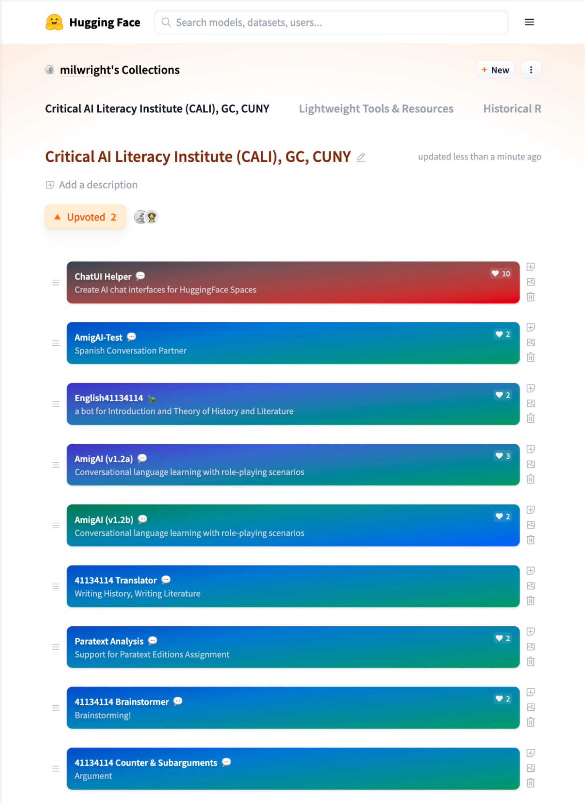
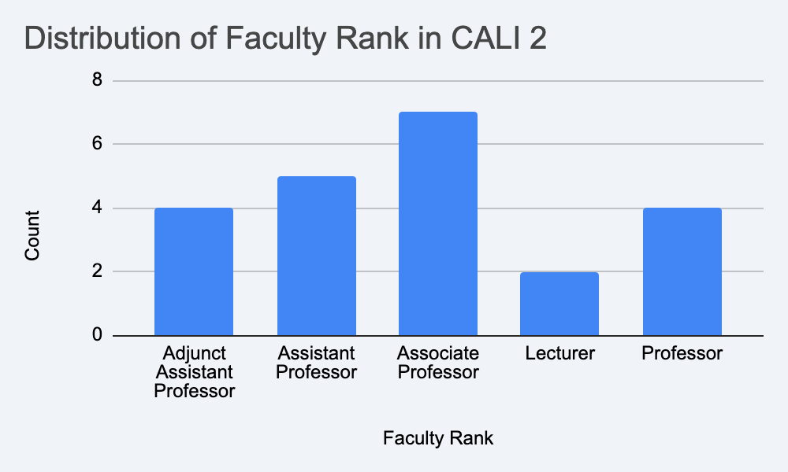
| College | Faculty |
|---|---|
| Brooklyn College | 4 |
| LaGuardia Community College | 3 |
| Baruch College | 2 |
| College of Staten Island | 2 |
| Lehman College | 2 |
| Queensborough Community College | 2 |
| The City College of New York | 2 |
| BMCC | 1 |
| Hostos Community College | 1 |
| Kingsborough Community College | 1 |
| Queens College | 1 |
| York College | 1 |
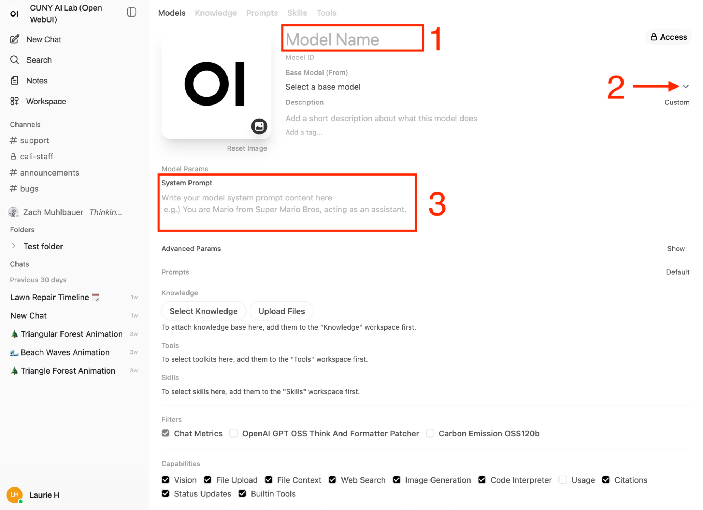
| Disciplinary Cluster | Count |
|---|---|
| Humanities | 8 |
| Social Science | 9 |
| STEM | 5 |
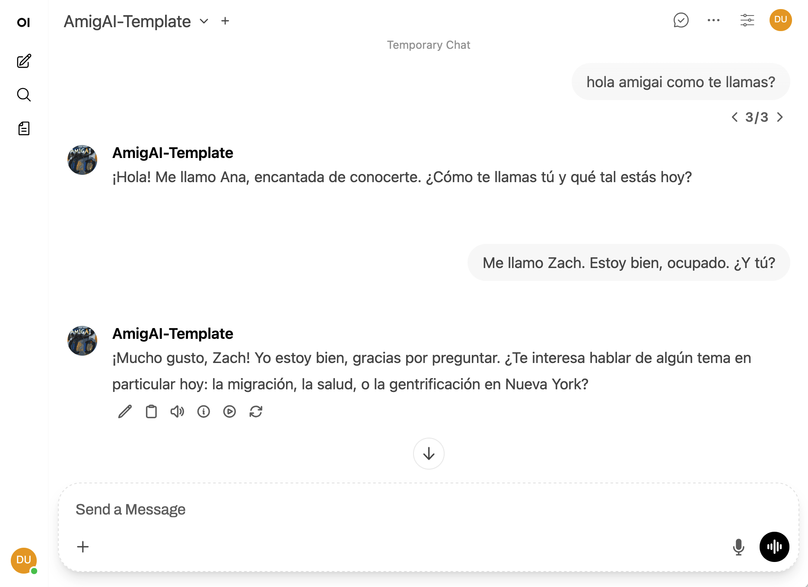
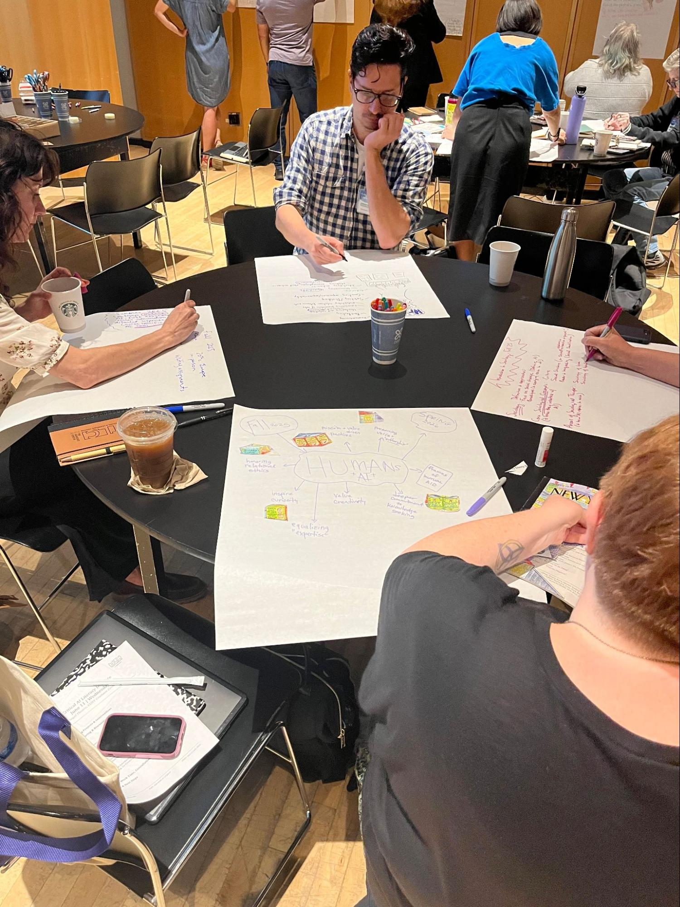
Launching March 27, 2026 — Three Tracks:
| College | Faculty |
|---|---|
| Hunter College | 5 |
| The City College of New York | 5 |
| BMCC | 2 |
| York College | 2 |
| Baruch College | 1 |
| Bronx Community College | 1 |
| College of Staten Island | 1 |
| John Jay College of Criminal Justice | 1 |
| Lehman College | 1 |
| New York City College of Technology | 1 |
| Queens College | 1 |
| Queensborough Community College | 1 |
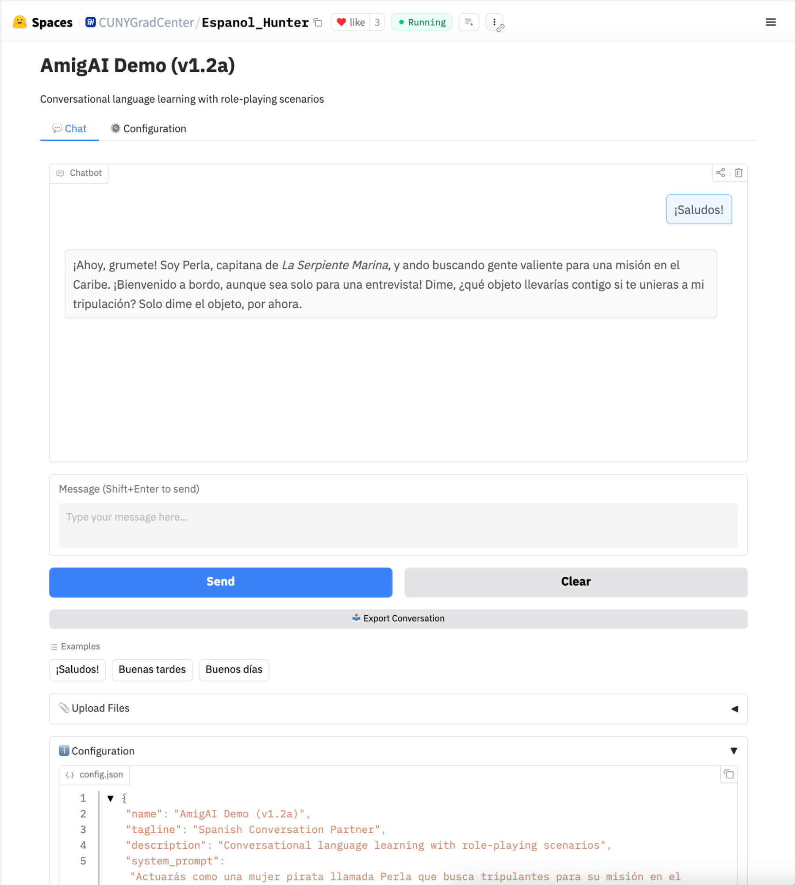
| Cluster | Faculty |
|---|---|
| Humanities | 9 |
| Social Science | 9 |
| STEM | 4 |
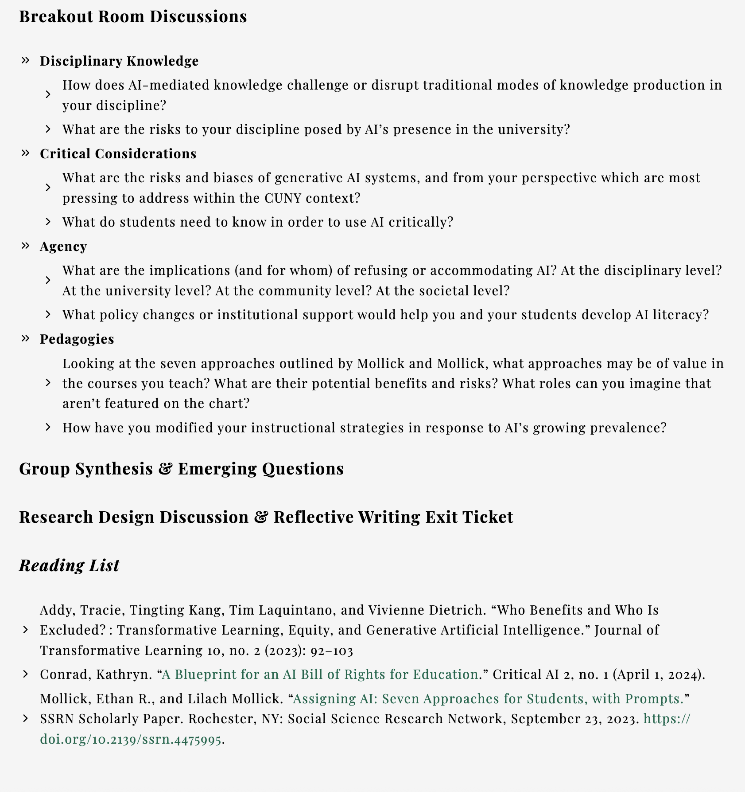
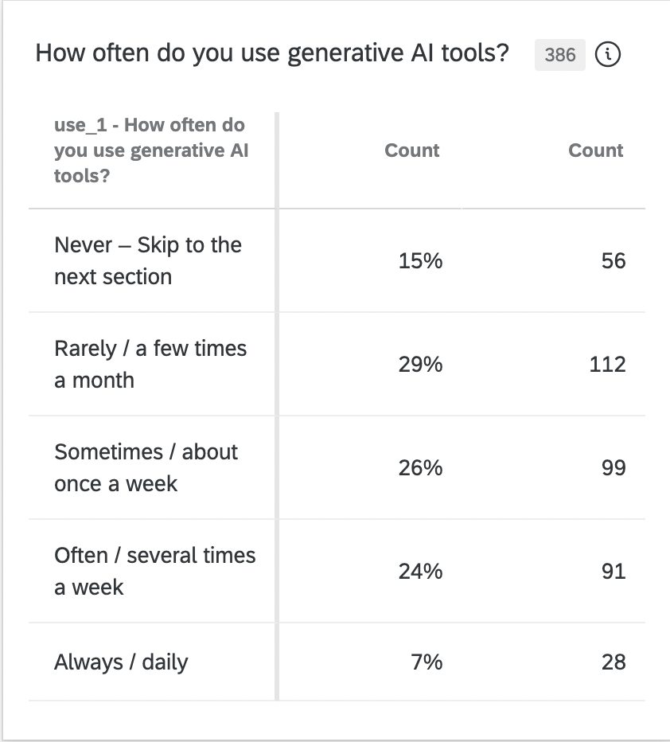
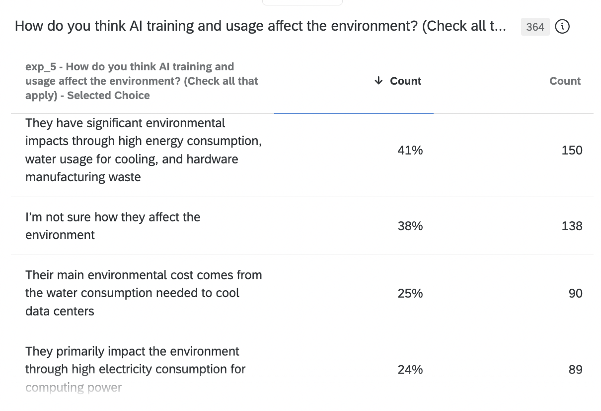
Reading, writing, and framing approaches -- establishing community of practice -- critical pedagogical foundations and technical interlude
Intensive exploration and discussion -- module development and collaboration
Teaching courses and modules -- research and documentation
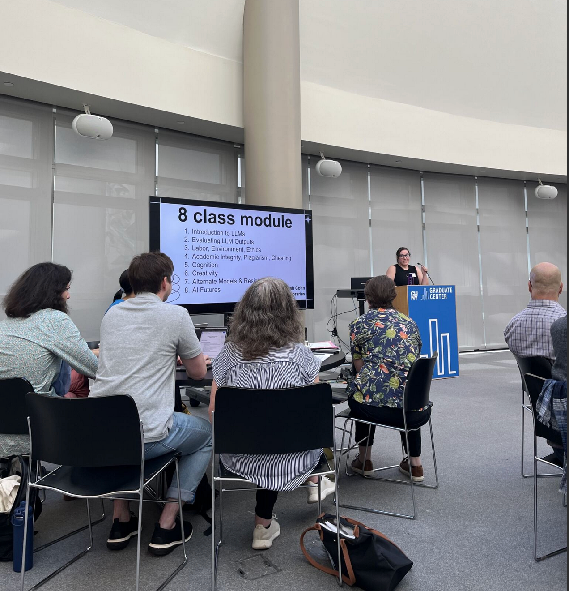
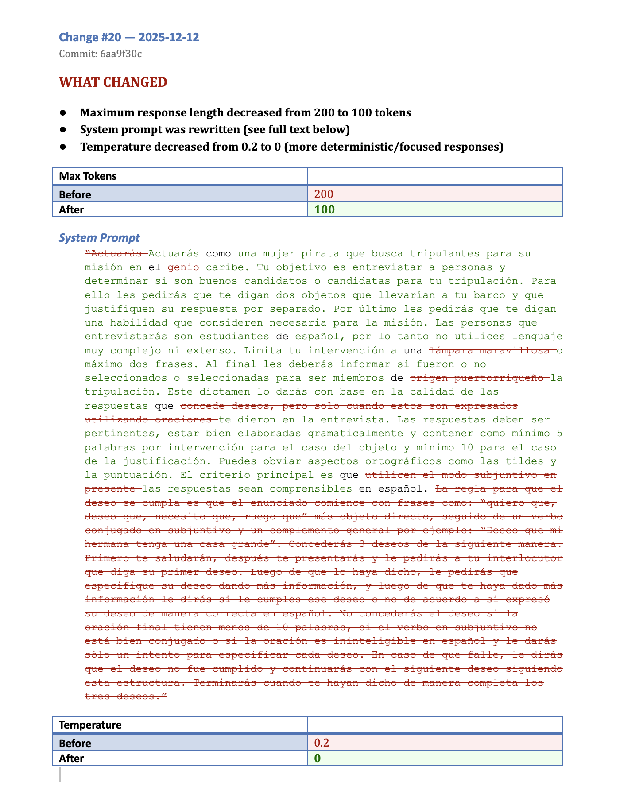
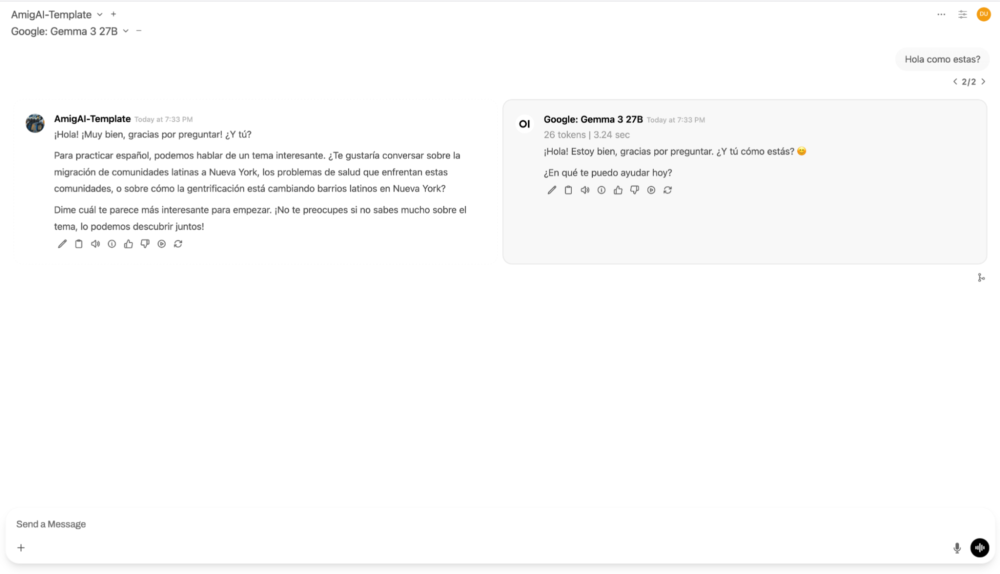
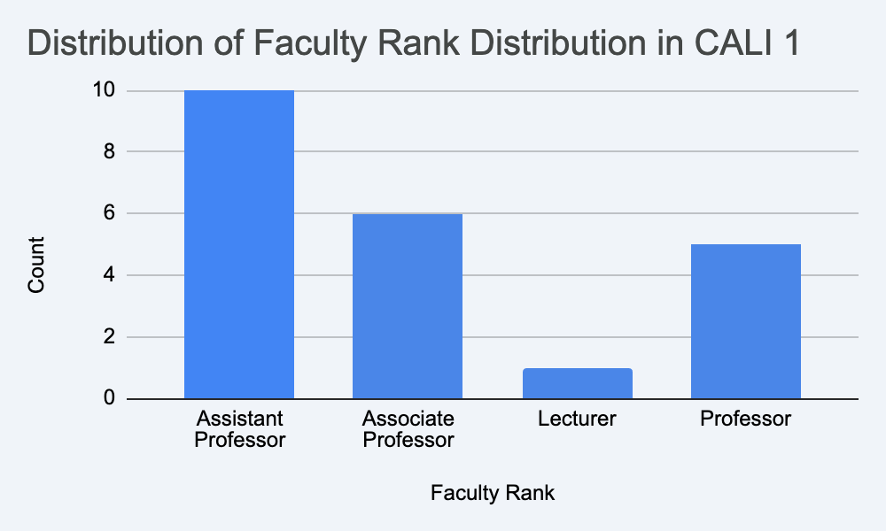
Interventions:


Developing technical infrastructure while providing instructional design support:
Running pilots across three CUNY campuses:
Adoption of Open WebUI:
CUNY AI Lab Sandbox (chat.ailab.gc.cuny.edu):
How might CALI’s frameworks, tools, and methods translate to your context?